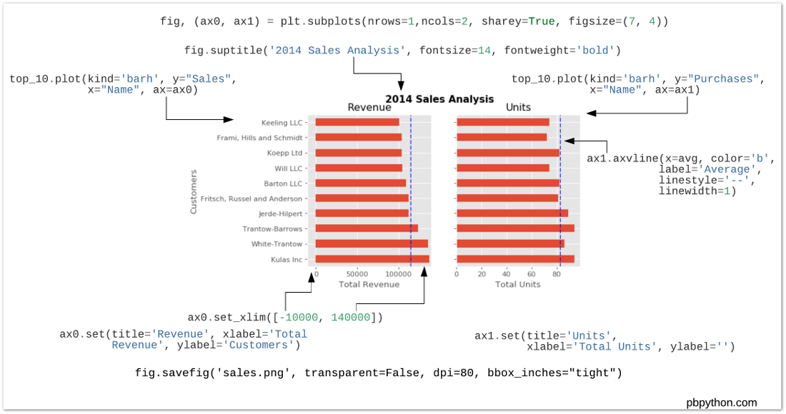

7. Trực quan hóa với Matplotlib
7.1. Cơ bản về matplotlib
matplotlib là thư viện được sử dụng rộng rãi trong Python khi trực quan hóa dữ liệu. Tuy nhiên, với những người mới sử dụng matplotlib có thể sẽ có nhiều khó khăn do có 2 cách viết xây dựng biểu đồ trong matplotlib. Mặc dù vậy, việc sử dụng và hiểu cách làm việc với matplotlib sẽ rất có ích trong việc xây dựng các biểu đồ nâng cao bởi lẽ các thư viện nâng cao như seaborn đều được xây dựng trên nền của matplotlib.
Ví dụ cơ bản matplotlib
[11]:
import numpy as np
import matplotlib as mlt
import matplotlib.pyplot as plt
# %matplotlib inline
import matplotlib_inline
matplotlib_inline.backend_inline.set_matplotlib_formats("retina")
8. Sử dụng style plot
plt.style.use('seaborn') .```
matplotlib có chứa nhiều style khác nhau. Ta có thể kiểm tra với câu lệnh sau
[12]:
plt.style.available
[12]:
['Solarize_Light2',
'_classic_test_patch',
'_mpl-gallery',
'_mpl-gallery-nogrid',
'bmh',
'classic',
'dark_background',
'fast',
'fivethirtyeight',
'ggplot',
'grayscale',
'seaborn-v0_8',
'seaborn-v0_8-bright',
'seaborn-v0_8-colorblind',
'seaborn-v0_8-dark',
'seaborn-v0_8-dark-palette',
'seaborn-v0_8-darkgrid',
'seaborn-v0_8-deep',
'seaborn-v0_8-muted',
'seaborn-v0_8-notebook',
'seaborn-v0_8-paper',
'seaborn-v0_8-pastel',
'seaborn-v0_8-poster',
'seaborn-v0_8-talk',
'seaborn-v0_8-ticks',
'seaborn-v0_8-white',
'seaborn-v0_8-whitegrid',
'tableau-colorblind10']
[13]:
# Ví dụ 1
x = np.linspace(0, 10, 100)
fig = plt.figure()
plt.plot(x, np.sin(x), '-')
plt.plot(x, np.cos(x), '--')
plt.show()
Giải thích: - pyplot tạo một object plot. Các câu lệnh của plt sẽ thay đổi các thành phần trong plot (add, remove, modify…). - plt.show() sẽ hiển thị object cuối cùng sau khi đã thực hiện toàn bộ câu lệnh. - Khi thực hiện option %matplotlib inline, sẽ không cần sử dụng plt.show()
# Save plot
fig.savefig('my_figure.png')
8.1. Hai cách xây dựng biểu đồ
Mặc dù matplotlib rất mạnh nhưng lại gây khó khăn cho người mới dùng vì có 2 cách xây dựng biểu đồ:
Theo
matlabTheo
object oriented- lập trình đối tượng
Với những người sử dụng R chuyển sang Python, nên sử dụng cách viết lập trình đối tượng.
8.1.1. Matlab style
Cách này được thực hiện thực hiện như sau:
Tạo biểu đồ
Tạo subplot trong biểu đồ, xác định tọa độ và thêm biểu đồ con
[14]:
# Tạo figure
plt.figure()
# Tạo khu vực 2 hàng, 1 cột, 1 panel
plt.subplot(2,1,1) # Add plot vào panel số 1
plt.plot(x, np.sin(x), '-', color = "darkblue")
plt.subplot(2,1,2) # Add plot vào panel số 2
plt.plot(x, np.cos(x), '--', color = "darkred")
plt.show()
Lưu ý: Hai biểu đồ phải được đặt cùng trong 1 cell khi xây dựng biểu đồ
8.1.2. Lập trình đối tượng
Với cách lập trình đối tượng, matplotlib được xây dựng như sau
Sử dụng plt.subplots(), kết quả trả ra là 2 object dạng figure và axes trong matplotlib.
figurelà toàn bộ biểu đồaxeslà một biểu đồ con
Với Python, khi sử dụng matplotlib, ta nên dùng cách viết số 2 - giúp cho việc xây dựng biểu đồ tường minh và rõ ràng hơn.
Hai câu lệnh sau là tương đương:
# Cách 1
fig = plt.figure()
ax = plt.axes()
# Cách 2
fig, ax = plt.subplots()
Để hiểu hơn các cấu phần của matplotlib, xem chart dưới đây
Xem ví dụ dưới đây
[15]:
fig, ax = plt.subplots(2) # 2 hàng, 1 cột
ax[0].plot(x, np.sin(x))
ax[1].plot(x, np.cos(x), '--')
# Gắn thêm title
ax[0].set(title = "sin(x)")
ax[1].set(title = "cos(x)")
fig.suptitle("Ví dụ 1")
plt.show()
[16]:
fig, ax = plt.subplots(1) # 1 hàng, 1 cột
ax.plot(x, np.sin(x))
ax.plot(x, np.cos(x), '--')
plt.title("Ví dụ 2")
plt.show()
Các method hay dùng để tùy chỉnh biểu đồ với ``ax`` method
Lưu ý: Các phương pháp sử dụng hàm plt và methods axes là tương đương nhau
plt.xlabel()→ax.set_xlabel()plt.ylabel()→ax.set_ylabel()plt.xlim()→ax.set_xlim()plt.ylim()→ax.set_ylim()plt.title()→ax.set_title()
[17]:
ax = plt.axes()
ax.plot(x, np.sin(x))
ax.set(xlim = (0, 10), ylim = (-2, 2),
xlabel = 'x', ylabel = 'sin(x)',
title = 'Biểu đồ sin(x)')
[17]:
[(0.0, 10.0),
(-2.0, 2.0),
Text(0.5, 0, 'x'),
Text(0, 0.5, 'sin(x)'),
Text(0.5, 1.0, 'Biểu đồ sin(x)')]
8.2. Các loại biểu đồ thường dùng
8.2.1. Scatter plot
[18]:
# Tạo data giả lập
rng = np.random.RandomState(0)
x = rng.randn(100)
y = rng.randn(100)
colors = rng.rand(100)
sizes = 1000 * rng.rand(100)
# Tạo biểu đồ
fig, ax = plt.subplots(1)
ax.scatter(x, y, c=colors, s=sizes, alpha=0.3,
cmap='viridis')
plt.show(fig)
8.2.2. Contour plot
[19]:
# Tạo data
def my_value(x, y):
return np.sin(x) ** 10 + np.cos(10 + x*y) * np.cos(x)
x = np.linspace(0, 5, 50)
y = np.linspace(0, 5, 40)
X, Y = np.meshgrid(x, y)
Z = my_value(X, Y)
[20]:
# Tạo biểu đồ chính tắc
fig, ax = plt.subplots()
ax = plt.contour(X, Y, Z, colors = "darkred", alpha = .6)
plt.show(fig)
Ta cũng có thể tạo biểu đồ có figure ẩn như sau
[21]:
ax = plt.axes()
ax = plt.contour(X, Y, Z, 20, cmap='RdGy')
plt.show(ax)
8.2.3. Histogram
[22]:
# Step 0: Tạo dữ liệu
x = np.random.normal(0, 1, 1000)
# Step 1: Tạo figure, ax
fig = plt.figure()
ax1 = fig.add_subplot(1, 1, 1)
# Step 2: Tạo histogram
ax1.hist(x, color = 'steelblue', alpha = 0.7)
#Add đường giá trị trung bình
ax1.axvline(x = np.mean(x), color = 'darkred', linestyle = '--')
plt.show(fig)
8.2.4. Text
Ta có thể còn annotate bằng cách dùng method ax.annotate
[23]:
x = np.random.normal(0,1,1000)
[24]:
fig, ax = plt.subplots()
ax.hist(x, color = 'steelblue', alpha = 0.7)
#Add đường giá trị trung bình
ax.axvline(x = np.mean(x), color = 'darkred', linestyle = '--')
ax.annotate('Mean = 0', xy = (0.5, 240))
plt.show(fig)
8.2.5. Box plot
[25]:
x = np.random.normal(1, 3, 100)
fig, ax = plt.subplots()
ax.boxplot(x, showmeans = True)
plt.show()
8.2.6. Area chart
[26]:
plt.style.use('_mpl-gallery')
# make data
x = np.arange(0, 10, 2)
ay = [1, 1.25, 2, 2.75, 3]
by = [1, 1, 1, 1, 1]
cy = [2, 1, 2, 1, 2]
y = np.vstack([ay, by, cy])
# plot
fig, ax = plt.subplots()
ax.stackplot(x, y)
ax.set(xlim=(0, 8), xticks=np.arange(1, 8),
ylim=(0, 8), yticks=np.arange(1, 8))
fig.suptitle("Area chart")
plt.show()
8.3. Tinh chỉnh các thành phần
Các thành phần phụ của matplotlib như sau

8.4. Tài liệu tham khảo
Python Data Science Handbook - Chương 4
[ ]: